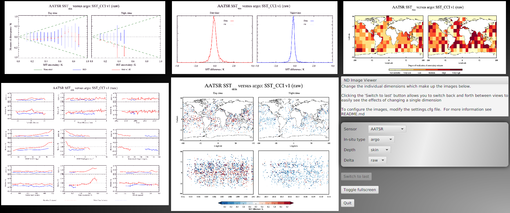

ND Image View
ND Image View is a small application for viewing sets of images which depend on many different variables.
It was originally created for use in the sea-surface temperature (SST) project as part of the ESA climate change initiative (http://www.esa-sst-cci.org/). In this project, satellite measurements were being compared with in-situ measurements. A large number of graphs of varying types (histogram, spatial, uncertainty, etc) was generated for many combinations of:
- Satellite instrument (~10 different ones)
- In-situ measurement type (~7 different types)
- Surface or depth measurement
- Different comparison methods (~5 different methods)
- Plot type (5 different plot types)
This gives a combination of around 3500 possible plots (10 * 7 * 2 * 5 * 5), of which just over 1400 were present.
To aid researchers in comparing results, ND Image View was developed. It allows users, through use of a simple configuration file, to define the different dimensions which these plots depend on, display a number of graphs at once, and then change the value of one of these dimensions at a time to see what effect it has on the graphs.
For example, once configured and run, ND Image View could be used to display all of the different plot types on a grid. Through use of a simple interface, any one of the other variables which the graphs depend on can be changed to see what effect this has on the set of plots.
"ND" stands for "N-Dimensional", since these variables can be considered as dimensions within an n-dimensional space filled with images :-)
Downloading The Software
ND Image View v1.0 can be downloaded from here
Running The Software
ND Image View requires at least Java 8. Once you have that you can either run it with:
java -jar nd-image-view.jar
or simply double-click on it in your file manager (OS-dependent).
Configuration
Configuration of ND Image View is performed by creating a file named settings.cfg in the same directory as the executable JAR file. This distribution comes with a fully-documented example. The documentation here is to clarify behaviour - it is recommended to read and modify the included example settings.cfg to get started.
It must contain the following mandatory elements:
Data Path
Of the form path = /path/to/data1 or path = C:/path/to/data. Note that slashes (rather than backslashes) should be used on Windows systems.
Name Format
Of the form name_format = <format>. The format specifier must be as follows:
- It should be the name of the images within the data path, with variables representing the dimension names
- Variables are written as
${dimname}where the dimension name is one of the dimensions (which are defined later) - If a character is followed by
?and then a variable name, that character is omitted if the value of the variable is empty - Other characters are interpreted literally, so the use subdirectories is supported
Dimension to plot by
Of the form plot_by = <dimname>. This defines which dimension (defined later) will vary across the screen.
Which images to plot where
Of the form grid_i_j = <coord>. i and j represent the row and column to plot a particular image, and <coord> should be a valid value of the dimension defined by plot_by.
<coord> can also take the special value ${settings} which will be the location of the settings interface. You must define this at exactly one location
Dimensions and their values
Of the form:
[dimname;Dimension Title]
dimval1
dimval2
dimval2
If a dimension can have an empty value, ths dimval should be set to . (i.e. a single dot). dimname is the identifier used in the name format and the title is what is displayed next to the variable selector. The title is optional.
All dimensions found in the name format must be defined in this way.
settings.cfg may also optionally contain:
Relative column widths
Of the form col_widths = x,y,z... where x, y, z, etc. are the percentage column widths. If more widths than columns are specified, the final ones will be ignored. If fewer widths than columns are defined, the remaining columns will be of equal width distributed in the remaining space.
Relative row heights
Of the form row_heights = x,y,z... where x, y, z, etc. are the percentage row heights. If more heights than rows are specified, the final ones will be ignored. If fewer heights than rows are defined, the remaining rows will be of equal height distributed in the remaining space.